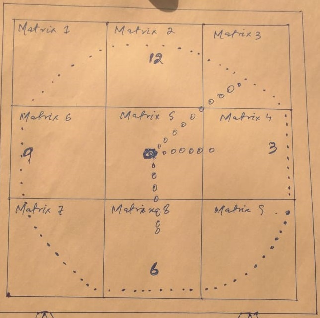
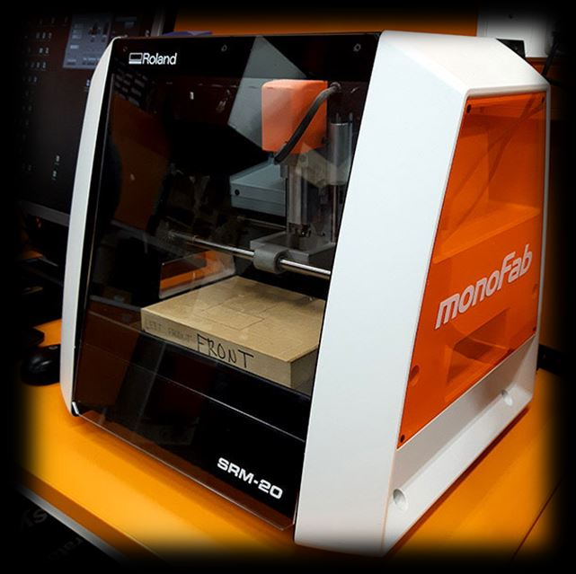
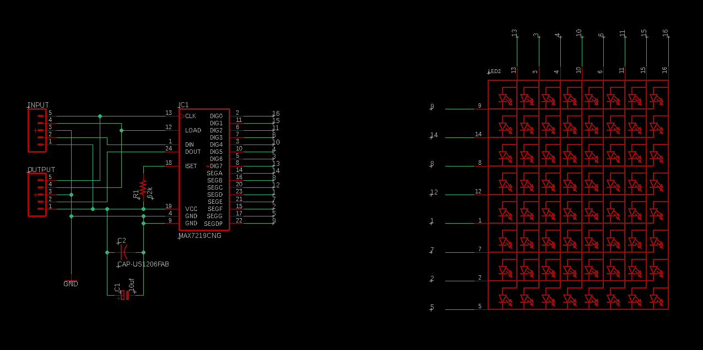
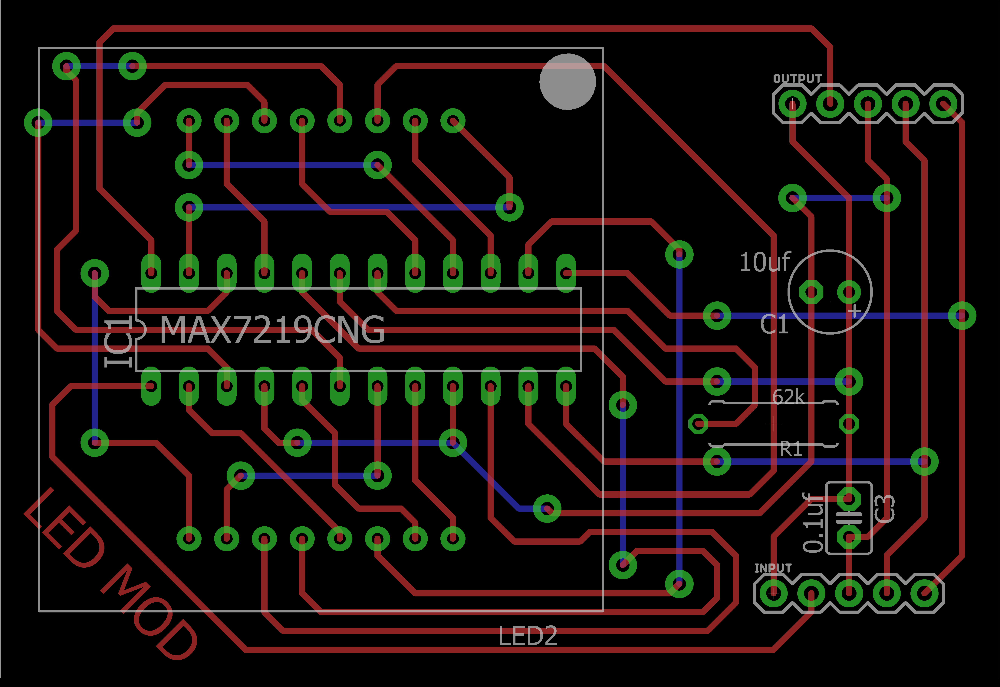
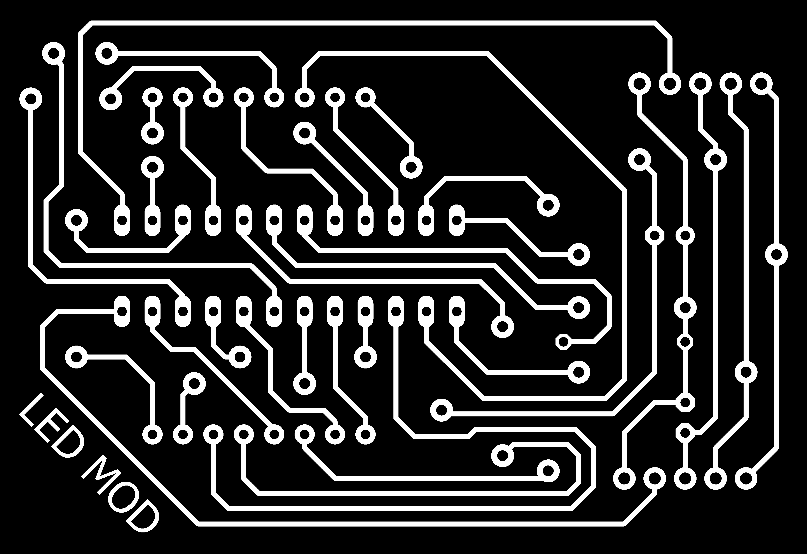
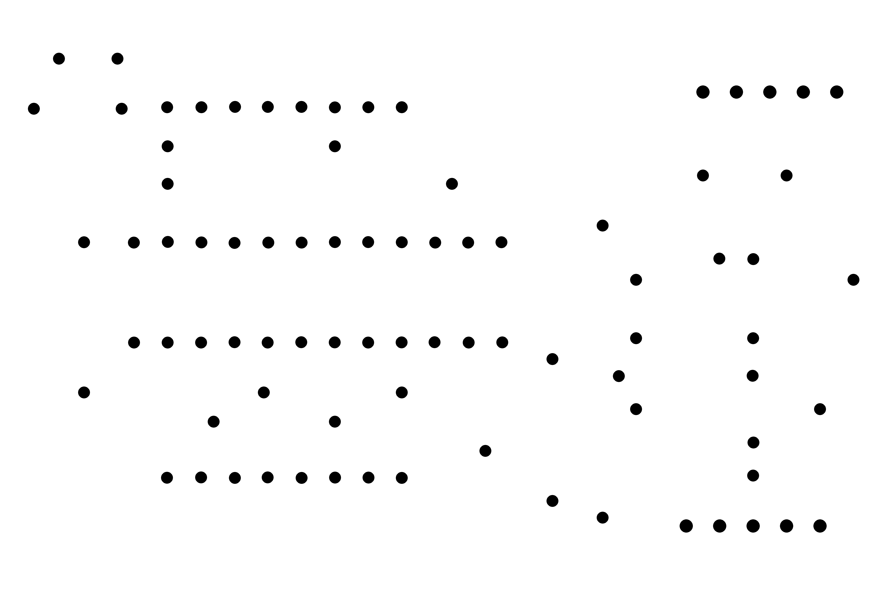
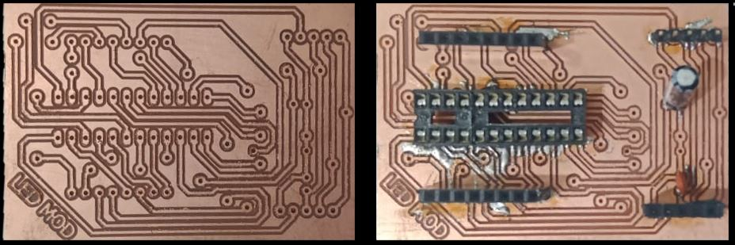

Home
Project Introduction
Project Execution Plan
Detail of Coponents
Project Design
Principle Working
Challenges
Project Materials
Conclusion
Ethical Aspects
PCB FABRICATION |
PCB FABRICATION |
Simple design of final product/Mechanical design:-When we started designing our project, we had a very sample image of our final product in our mind and we draw it on a page as it below. As it was a 3x3 led matrix (each matrix of 8x8 led) the best possible arranged was as below, for displaying analog clock on it beside many other sprites and messages. |
|  |
Printed Circuit Board (PCB) is easy and efficient way to make a complex circuit. It is printed on sheet of copper. First of all a schematic diagram of circuit is drawn on computer software. We are using eagle software but there are many others. Then the board of this schematic is made which is difficult and need practice. After that this board is converted into image form (.png) so the drilling machine could understand how to print the circuit on sheet. Here in Fab Lab SUKKUR IBA UNIVERSITY we have rolland machine (SRM-20) which perform printing of the circuit physically. After the complition of PCB devices are soldered onto the pcb.There are two types of devices.
The selection of these devices depend upon the requirement of the PCB and must be taken into account while making schematic of the circuit. Also the dimension of devices must be taken into account while making the board. |
This is small milling machine used for PCB fabrication and is available here in FAB LAB Sukkur IBA University. Engineered for optimum efficiency and productivity, the SRM-20 is a next-generation desktop mill that boasts a micro-step motor drive system for clean and precise contours and a phenomenal feed rate that's two times faster than previous generations Schematic and board made in eagle is converted into (.png) format and then is uploaded into http://fabmodules.org/ for further process. The final PCB is attached further in report. |
|
 |  |
Schematic is basically electrical circuit diagram. It uses symbol to represent components and connection of components. |
|  |
This Gerber file is basically the image of a schematic. It shows each individual connection and type of component used |
|  |
In the below picture, the white lines are called traces. These traces are the physical paths that connect components and connectors on the PCB board. A PCB allows current and signals to be transmitted through it. Traces are made by 1/64 pin header. |
|  |
It is one of the important part of the PCB fabrication. DIP Components are dipped into these drills and then soldered. |
|  |
After all these processes (printing and soldering) the final product (board) will look as below. One thing that must be kept in mind is that every connection must be double checked after soldering and continuity check is compulsory so there is no short path provided. |
|  |